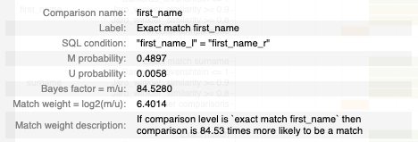

match_weights_chart¶
At a glance
Useful for: Looking at the whole Splink model definition.
API Documentation: match_weights_chart()
What is needed to generate the chart? A trained Splink model.
What the chart shows¶
The match_weights_chart show the results of a trained Splink model. Each comparison within a model is represented in a bar chart, with a bar showing the evidence for two records being a match (i.e. match weight) for each comparison level.
What the chart tooltip shows

The tooltip shows information based on the comparison level bar that the user is hovering over, including:
- The name of the comparison and comaprison level.
- The comparison level condition as an SQL statement.
- The m and u proability for the comparison level.
- The resulting bayes factor and match weight for the comparison level.
How to interpret the chart¶
Each bar in the match_weights_chart shows the evidence of a match provided by each level in a Splink model (i.e. match weight). As such, the match weight chart provides a summary for the entire Splink model, as it shows the match weights for every type of comparison defined within the model.
Any Splink score generated to compare two records will add up the evidence (i.e. match weights) for each comparison to come up with a final match weight score, which can then be converted into a probability of a match.
The first bar chart is the Prior Match Weight, which is the . This can be thought of in the same way as the y-intercept of a simple regression model
This chart is an aggregation of the m_u_parameters_chart. The match weight for a comparison level is simply \(log_2(\frac{m}{u})\).
Actions to take as a result of the chart¶
Some heuristics to help assess Splink models with the match_weights_chart:
Match weights gradually reducing within a comparison¶
Comparison levels are order dependent, therefore they are constructed that the most "similar" levels come first and get gradually less "similar". As a result, we would generally expect that match weight will reduce as we go down the levels in a comparison.
Very similar comparison levels¶
Comparisons are broken up into comparison levels to show different levels of similarity between records. As these levels are associated with different levels of similarity, we expect the amount of evidence (i.e. match weight) to vary between comparison levels. Two levels with the same match weight does not provide the model with any additional information which could make it perform better.
Therefore, if two levels of a comparison return the same match weight, these should be combined into a single level.
Very different comparison levels¶
Levels that have a large variation between comparison levels have a significant impact on the model results. For example, looking at the email comparison in the chart above, the difference in match weight between an exact/fuzzy match and "All other comparisons" is > 13, which is quite extreme. This generally happens with highly predictive features (e.g. email, national insurance number, social security number).
If there are a number of highly predictive features, it is worth looking at simplifying your model using these more predictive features. In some cases, similar results may be obtained with a deterministic rather than a probabilistic linkage model.
Logical Walk-through¶
One of the most effective methods to assess a splink model is to walk through each of the comparison levels of the match_weights_chart and sense check the amount of evidence (i.e. match weight) that has been allocated by the model.
For example, in the chart above, we would expect records with the same dob to provide more evidence of a match that first_name or surname. Conversely, given how people can move location, we would expect that city would be less predictive than people's fixed, personally identifying characteristics like surname, dob etc.
Anything look strange?¶
If anything still looks unusual, check out:
- the underlying m and u values in the
m_u_parameters_chart - the values from each training session in the
parameter_estimate_comparisons_chart
Related Charts¶
Worked Example¶
import splink.comparison_library as cl
from splink import DuckDBAPI, Linker, SettingsCreator, block_on, splink_datasets
df = splink_datasets.fake_1000
settings = SettingsCreator(
link_type="dedupe_only",
comparisons=[
cl.JaroWinklerAtThresholds("first_name", [0.9, 0.7]),
cl.JaroAtThresholds("surname", [0.9, 0.7]),
cl.DateOfBirthComparison(
"dob",
input_is_string=True,
datetime_metrics=["year", "month"],
datetime_thresholds=[1, 1],
),
cl.ExactMatch("city").configure(term_frequency_adjustments=True),
cl.EmailComparison("email"),
],
blocking_rules_to_generate_predictions=[
block_on("first_name"),
block_on("surname"),
],
)
linker = Linker(df, settings, DuckDBAPI())
linker.training.estimate_u_using_random_sampling(max_pairs=1e6)
blocking_rule_for_training = block_on("first_name", "surname")
linker.training.estimate_parameters_using_expectation_maximisation(
blocking_rule_for_training
)
blocking_rule_for_training = block_on("dob")
linker.training.estimate_parameters_using_expectation_maximisation(
blocking_rule_for_training
)
chart = linker.visualisations.match_weights_chart()
chart